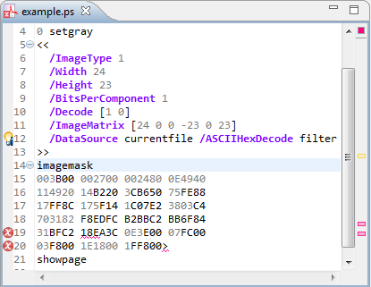

Did you ever came across a problem like this?
Obviously the parser tried to parse the raw data and failed with lots of syntax errors.
You can solve this issue by surrounding the raw data with
%%BeginData:
and
%%EndData
comments. For more information see also Adobe's specification
of DSC comments (on page 45).
Now the parser doesn't parse the raw data, and everything is fine.